Referenz Handbuch
Copyright
Dieses Dokument ist geschützt © 2010-2015 durch deren Beitragende welche nachfolgend aufgeführt sind. Sie können es nach den Bedingungen der GNU General Public License (https://www.gnu.org/licenses/gpl.html), Version 3 oder später, oder der Creative Commons Attribution License (https://creativecommons.org/licenses/by/3.0/), Version 3.0 oder später verteilen oder verändern .
Beitragende
Jean-Pierre Charras.
Übersetzung
Carsten Schönert <c.schoenert@t-online.de>, 2016
Feedback
Bitte senden Sie alle Fehlermeldungen, Vorschläge oder neue Versionen an:
-
KiCad Dokumentation: https://github.com/KiCad/kicad-doc/issues
-
KiCad Software: https://bugs.launchpad.net/kicad
-
KiCad Software i18n Übersetzung: https://github.com/KiCad/kicad-i18n/issues
Datum der Veröffentlichung und Softwareversion
23.05.2015
1. Einführung in den Pl_Editor
Der Pl_Editor ist ein Editor für Seitenlayouts um angepasste Titelblöcke und Referenzrahmen zu erstellen.
Der Titelblock, verbunden mit dem Bezugsrahmen, und andere grafische Elemente (z.B. Logos) werden hier Seitenlayout genannt.
Basiselemente für das Seitenlayout sind:
-
Linien
-
Rechtecke
-
Texte in Eeschema oder Pcbnew (mit Formatierungssymbolen, welche durch aktuellen Text, wie Datum, Seitennummerierung, … ersetzt werden)
-
Multi-Polygone (hauptsächlich um Logos und spezielle Grafikformen platzieren zu können)
-
Bitmap Grafiken.
|
Warnung
|
Bitmap Grafiken können nur von wenigen Plottern gezeichnet werden (nur PDF und PS), auf anderen Plottern wird nur eine Rahmen gezeichnet. |
-
Objekte können wiederholt werden, Texte und Multi-Polygone können gedreht werden.
2. Pl_Editor Dateien
2.1. Eingabedatei und Standard Titleblock
Der Pl_Editor liest oder schreibt Seitenbeschreibungsdateien *.kicad_wks (KiCad Worksheet).
Eine interne Standard Seitenlayout Konfiguration wird zur Anzeige des KiCad Titelblock benutzt bis spezielle Informationen aus einer Datei gelesen wurden.
2.2. Ausgabedatei
Die aktuelle Konfiguration der Seitenlayout Beschreibung kann in eine Datei *.kicad_wks geschrieben werden, dies geschieht unter Verwendung des S-Expressions Format, welches sehr oft in KiCad verwendet wird.
Diese Datei kann benutzt werden um in Eeschema und/oder Pcbnew ein benutzterspezifisches Seitenlayout zu benutzen.
3. Theorie über die Vorgänge
3.1. Basiselemente für das Seitenlayout:
Basiselemente für das Seitenlayout sind:
-
Linien
-
Rechtecke
-
Texte in Eeschema oder Pcbnew (mit Formatierungssymbolen, welche durch aktuellen Text, wie Datum, Seitennummerierung, … ersetzt werden)
-
Multi-Polygone (hauptsächlich um Logos und spezielle Grafikformen platzieren zu können). Diese Mehrfach Polygone werden durch Bitmap2component erstellt und können nicht innerhalb des Pl_Editors erzeugt werden, es ist nicht möglich solche Formen manuell zu erstellen.
-
Bitmap Grafiken um Logos zu platzieren.
|
Warnung
|
Bitmap Grafiken können nur von einigen Plottern gezeichnet werden: nur PDF und PS |
Zusammengefasst:
-
Texte, Multi-Polygone und Bitmap Grafiken werden durch eine Position definiert und können gedreht werden.
-
Linien (eigentlich sind dies Segmente) und Rechtecke sind durch zwei Punkte definiert: dem Start- und dem Endpunkt. Diese Elemente können nicht gedreht werden (dies ist nutzlos für Segmente).
Diese Basis Elemente können wiederholt werden.
Texte, die wiederholt werden, dürfen auch einen Inkrement für eine Beschriftung enthalten (macht nur Sinn, wenn der Text aus einem einzelnen Buchstaben oder mindestens aus einer Zahl besteht).
3.2. Definition der Koordinaten
Jede Positionangabe, also die Start- und Endpunkte der Elemente, ist immer relativ zur einer Ecke der Seite.
Durch diese Eigenschaft wird sichergestellt, dass Sie ein Seitenlayout definieren können, welches nicht abhängig ist von der tatsächlichen Papiergröße.
3.3. Bezugspunkte und Koordinaten:

-
Wird die Papiergröße verändert so bleibt die relative Position der Elemente zu den Bezugspunkten gleich.
-
Für gewöhnlich wird der Titelblock in der rechten unteren Ecke angebracht, daher ist diese Ecke der Vorgabeplatz für den Titelblock wenn ein Elelement erstellt wird.
Bei Rechtecken und Segmenten, welche zwei definierte Punkte besitzen, hat jeder Punkt eine Bezugsecke.
3.4. Drehungen
Elemente deren Position durch einen einzelnen Punkt definiert wird (Texte und Multi-Polygone) können gedreht werden:
Normal: Drehung = 0

Gedreht: Rotation = 20 und 10 Grad.

3.5. Wiederholungsfunktion
Elemente können wiederholt werden:
Dies ist hilfreich um ein Raster und Rasterbeschriftungen anzulegen.

4. Texte und Formatierungen
4.1. Umwandlungselemente:
Texte können einfache Zeichenketten sein oder zusätzlich Umwandlungselemente enthalten.
Umwandlungselemente werden durch aktuelle Werte aus Eeschema oder Pcbnew ersetzt.
Diese sind wie Umwandlungselemente in der printf Funktion.
Ein Umwandlungselement besteht aus dem Prozentzeichen % und einem Buchstaben.
Das %C Format hat eine nachfolgende Zahl (zur Identifizierung des Kommentars).
Umwandlungselemente sind:
%% = wird ersetzt durch %
%K = KiCad Version
%Z = Typ des Papierformats (A4, USLetter …)
%Y = Name der Firma
%D = Datum
%R = Revision
%S = aktuelles Blatt
%N = Gesamtanzahl Blätter
%Cx = Kommentar (x = 0 bis 9 zur Identifikation des Kommentars)
%F = Name der Datei
%P = Zeichnungspfad (voller Zeichnungsname, für Eeschema)
%T = Title
Beispiel:
"Größe: %Z" zeigt "Größe: A4" oder "Größe: USLetter"
Benutzer Ansichtsmodus: Button
 aktiviert. Der
Titelblock wird so angezeigt wie dieser später in Eeschema und Pcbnew
aussehen wird.
aktiviert. Der
Titelblock wird so angezeigt wie dieser später in Eeschema und Pcbnew
aussehen wird.

"Nativer" Ansichtsmodus: Button
 aktiviert. Es wird der
native Text angezeigt der im Pl_Editor eingegeben wird, inklusive der
Umwandlungselemente.
aktiviert. Es wird der
native Text angezeigt der im Pl_Editor eingegeben wird, inklusive der
Umwandlungselemente.

4.2. Mehrzeilige Texte:
Texte können mehrzeilig sein.
Es gibt zwei Möglichkeiten neue Zeilen in Texte einzufügen:
-
Fügen Sie mit der Steuersequenz "\n" eine zweite Zeile hinzu (hauptsächlich im Menü Seite einrichten von KiCad).
-
Fügen Sie eine neue Zeile im Design Fenster vom Pl_Editor hinzu.
Hierzu ein Beispiel:
Einstellung
Ausgabe
4.3. Mehrzeiliger Text im Dialog Seite einrichten:
Im Dialog für die Seiteneinrichtung können keine mehrzeiligen Texte eingegeben werden.
Eine zweite Zeile kann jedoch erzwungen werden indem die Steuersequenz \n benutzt wird.
Hier wird ein zweizeiliger Text im Feld Kommentar 2 verwendet:
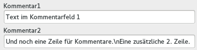
Hier die entsprechende spätere Anzeige:
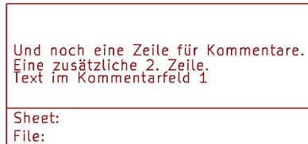
Wenn Sie wirklich \n innerhalb des Textes benutzen wollen benutzen Sie "\\n".
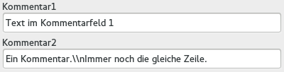
Dies erzeugt folgende Anzeige:
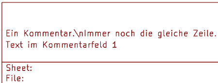
5. Beschränkungen
5.1. Beschränkung auf Seite 1
In Eeschema besteht der komplette Schaltplan sehr oft aus mehr wie einer Seite.
Üblicher Weise ist das Seitenlayout und dessen Elemente für alle Seiten gleich.
Wenn ein Benutzer jedoch Elemente nur auf der Seite 1, oder nur auf den Folgeseiten angezeigt bekommen soll dann ist dies durch die "Option Seite 1" möglich:
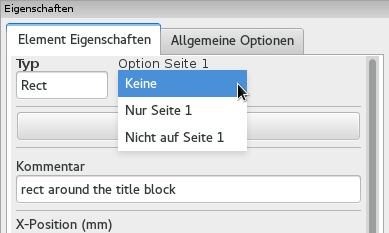
Option Seite 1
-
Keine: keine Beschränkungen
-
Nur Seite 1: Das Element ist nur auf Seit 1 sichtbar.
-
Nicht auf Seite 1: Das Element ist auf allen anderen Seiten außer Seite 1 sichtbar.
5.2. Beschränkung der Textgröße
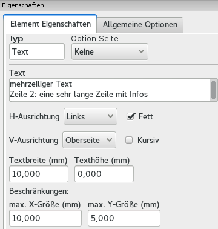
Exklusiv für Texte können zwei folgende Parameter gesetzt werden:
-
die maximale X-Größe
-
die maximale Y-Größe
Welche eine Begrenzungsbox bilden.
Sind diese Parameter nicht auf 0 gesetzt wird die benutzte Texthöhe und -breite dynamisch angepasst wenn der Text größer ist als die maximale X-Größe und/oder die maximale Y-Größe damit der resultierende Text in die Begrenzungsbox passt.
Ist die aktuelle Textgröße kleiner als die Angaben für X-Größe und/oder die Y-Größe dann wird die Textbreite und die Texthöhe nicht verändert.
Der Text ohne Begrenzungsbox. Maximale X-Größe = 0,0, maximale Y-Größe = 0,0

Der gleiche Text mit einer Beschränkung der Textlaufweite. Maximale X-Größe = 40,0, maximale Y-Größe = 0,0

Ein mehrzeiliger Text, mit Beschränkungen:
Einstellung
Ausgabe
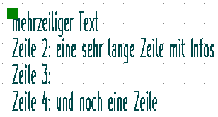
6. Aufruf des Pl_Editors
Der Pl_Editor wird typischer Weise von der Kommandozeile aus aufgerufen, oder alternativ über den KiCad Manager.
Auf der Kommandozeile ist der Aufruf in der Regel pl_editor <*.kicad_wks Datei>.
7. Pl_Editor Kommandos
7.1. Hauptfenster
Die nachfolgende Grafik zeigt das Hauptfenster vom Pl_Editor.

Die linke Seite des Fensters enthält die Liste der Basis Elemente.
Auf der rechten Seite ist der Editor für die Element Eigenschaften zu sehen.
7.2. Hauptfenster Toolbar
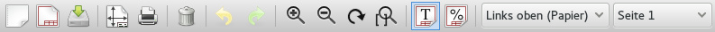
Die obere Toolbar erlaubt einen einfachen Zugriff auf die folgenden Kommandos:
|
Erstellt ein neues Design für ein Seitenlayout. |
|
Öffnet ein vorhandenes Seitenlayout aus einer Datei. |
|
Speichert das aktuelle Design in einer Seitenlayoutbeschreibungsdatei (*.kicad_wks). |
|
Öffnet den Dialog zum Seite einrichten und den Parametern für den Titelblock. |
|
Druckt die aktuelle Seite. |
|
Löscht das aktuelle gewählte Element. |
|
Rückgängig/Wiederherstellen. |
|
Hinein zoomen, Heraus zoomen, Ansicht aktualisieren, Autozoom. |
|
Anzeige des Layouts im Benutzermodus: Texte werde angezeigt wie auch in Eeschema oder Pcbnew, Formatierungssymbole werden durch die entsprechenden Ersetzungen angezeigt. |
|
Anzeige des Seitenlayouts im nativen Modus: Texte werden so dargestellt wieder diese aktuell "sind", aus dem Plain Text und den benutzten Formatierungen ohne die späteren Ersetzungen. |
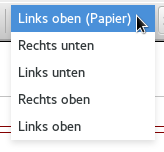 |
Auswahl des Referenzbezugs, für die Angabe der Koordinaten in der Statusbar. |
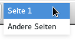 |
Auswahl der Gültigkeitsbereichs (Seite 1 oder Andere Seiten). Diese Auswahl hat eine Auswirkung für die Darstellung der Elemente die gewählt sind, in Abhängigkeit des gewählten Gültigkeitsbereichs werden Elemente für Seite 1 oder alle anderen Seiten angezeigt. Dies ermöglicht eine gewisse Vorschau, z.B. für Schaltpläne die mehrere Seiten enthalten können. |
7.3. Kommandos im Zeichnungsbereich
7.3.1. Tastatur-Befehle
F1 |
Hineinzoomen |
F2 |
Herauszoomen |
F3 |
Anzeige erneuern |
F4 |
Curser in die Mitte des Anzeigefensters bewegen |
Pos 1 |
Footprint ins Anzeigefenster einpassen |
Leerzeichen |
Setze relative Koordinaten zur aktuellen Cursor-Position |
Rechter Pfeil |
Cursor eine Rasterposition nach rechts bewegen |
Linker Pfeil |
Cursor eine Rasterposition nach links bewegen |
Pfeil hoch |
Cursor eine Rasterposition nach oben bewegen |
Pfeil runter |
Cursor eine Rasterposition nach unten bewegen |
7.3.2. Kommandos durch die Maus
Scrollrad |
Hinein und Heraus zoomen an der aktuellen Cursor Position |
Strg + Scrollrad |
Nach Rechts und Links bewegen |
Umsch + Scrollrad |
Nach Oben und Unten bewegen |
Rechter Mausklick |
Kontextmenü öffnen |
7.3.3. Kontextmenü
Auswahlmöglichkeiten nach einem Rechtsklick auf der Maus:
-
Linie hinzufügen
-
Rechteck hinzufügen
-
Text hinzufügen
-
Seitenlayoutbeschreibung aus Datei hinzufügen
Diese (obigen vier) Kommandos benutzt man um Basiselemente zum Seitenlayout hinzuzufügen. Ebenso werden folgende Einträge angezeigt.
-
Zoomauswahl: Direkte Auswahl des Zoom Faktors.
-
Rasterauswahl: Direkte Wahlmöglichkeit des Anzeigerasters.
|
Anmerkung
|
Seitenlayoutbeschreibung aus Datei hinzufügen sollte benutzt werden wenn Multi-Polygone hinzugefügt werden müssen, zum Beispiel ist dies nötig um Logos einzufügen. In der Regel besteht ein Logo aus hunderten Eckpunkten, Sie können ein solches Polygon nicht von Hand erstellen. Aber Sie können eine Layoutbeschreibungsdatei benutzen um solche Polygone hinzuzufügen die zum Beispiel mit Bitmap2Component erstellt worden ist. |
7.4. Informationen in der Statusbar
Die Statusbar ist im Fenster vom Pl_Editor das unterste Element und bietet hilfreiche Informationen für den Benutzer.
Die angezeigten Koordinaten sind immer relativ zur Bezugsecke welche als Referenzbezug gewählt worden ist.
8. Linkes Fenster
Das Fenster ganz links zeigt ein Liste der Elemente des Layouts.
Man kann einen Eintrag wählen indem man diesen in dieser Liste anwählt, oder im Layout Fenster die Linie oder den Text durch Linksklick auswählt. Mit einem Rechtsklick öffnet sich ein Popup Menü.
Dieses Popup Menü erlaubt Basis Operationen, das Hinzufügen neuen Elementes oder Löschen des gewählten Elementes.
→ Ein angewähltes Element wird zur visuellen Unterstützung im Editorfenster in einer anderen Farbe dargestellt.
Baum der Elemente: Das Element 19 ist ausgewählt, im Editorfenster wird das Element hervorgehoben.

9. Rechtes Fenster
Das Fenster auf der rechten Seite dient zum Editieren der Elementeigenschaften.
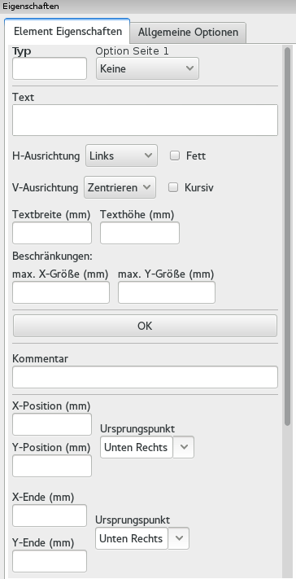 |
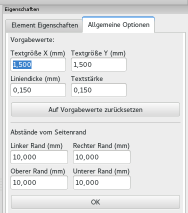 |
In diesem Dialog können Sie die Gültigkeit für die Seiten festlegen und auch die spezifischen Element Eigenschaften verändern.
Die angezeigten Einstellungen sind vom gewählten Element abhängig:
Einstellungen für Linien und Rechtecke |
Einstellungen für Text |
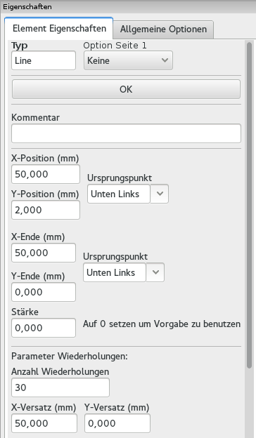 |
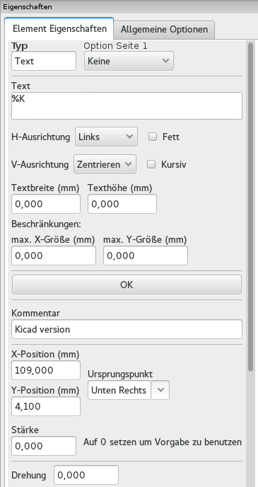 |
Einstellungen für Mehrfach Polygone |
Einstellungen für Bitmap Grafiken |
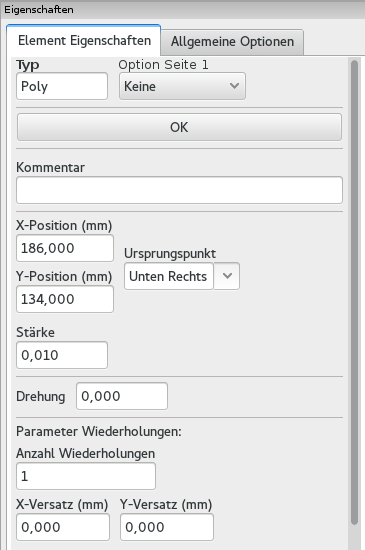 |
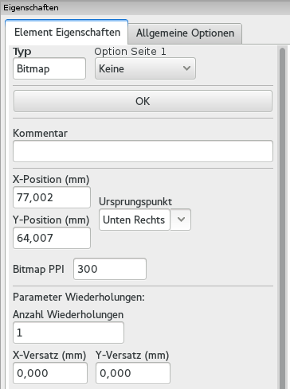 |
10. Interaktives Editieren
10.1. Auswahl eines Elements
Ein Element kann folgendermaßen ausgewählt werden:
-
Durch Anklicken im Baum der Elemente.
-
Durch Linksklick auf das Element im Editorfenster.
-
Durch Rechtsklick auf das Element im Editorfenster (ein PopUp Menü wird angezeigt).
Wenn das Element angewählt ist wird es in einer anderen Farbe dargestellt (in Gelb wenn man einen schwarzen Hintegrund gewählt hat).
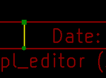 |
Der Startpunkt ( 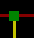 ) und und er Endpunkt ( ) werden hervorgehoben. |
Wenn auf einem Element ein Rechtsklick ausgeführt wird erscheint ein PopUp Menü.
Die Optionen des PopUp Menüs sind abhängig von der Auswahl:
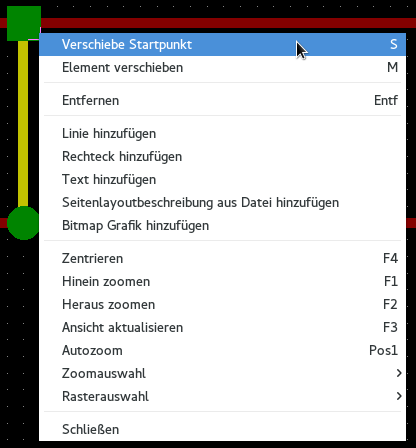 |
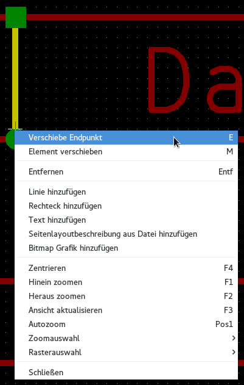 |
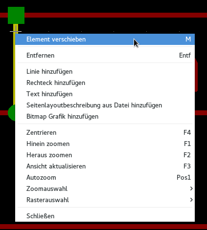 |
Wenn mehr wie ein Element gefunden wurden ist wird ein Menü zur Klarstellung angezeigt, um das richtige Element auszuwählen.
|
Wenn das Element ausgewählt worden ist, oder einer deren Endpunkte, kann es durch Mausbewegungen verschoben und durch einen Linksklick platziert werden. |

10.2. Erstellen von Elementen
Um eine neues Element hinzuzufügen benutzen Sie die rechte Maustaste wenn der Maus Cursor sich entweder in der Baumansicht der Elemente (linkes Fenster) oder im Layout Editorfenster (mittleres Fenster) befindet.
Ein PopUp Menü öffnet sich daraufhin:
Das PopUp Menü im linken Fenster.
Das PopUp Menü im Fenster des Seitenlayouteditors.
Linien, Rechtecke und Texte können hinzugefügt werden indem der zugehörige Menüeintrag ausgewählt wird.
Logos die hinzugefügt werden sollen müssen zuerst mit Hilfe von Bitmap2Component in eine Seitenbeschreibungslayoutdatei (*.kicad_wks) umgewandelt werden, diese Datei kann dann benutzt werden um das Logo einzubinden.
Die Option Seitenlayoutbeschreibung aus Datei hinzufügen kann dazu genutzt werden.
10.3. Hinzufügen von Linien, Rechtecken und Texten
Wenn diese Option angewählt wird öffnet sich ein Dialog:
Linie hinzufügen oder Rechteck hinzufügen
Text hinzufügen
Die Position und die Endpunkte als auch die Referenzbezüge können hier festgelegt werden.
Diese Werte können aber auch später nach Auswahl des Elements im Fenster der Eigenschaften definiert werden. Oder durch Bewegen des Elements oder eines der Endpunkte.
In den meisten Fällen sind die Referenzbezüge für beide Punkte gleich.
Wenn dies nicht der Fall ist dann ist die Festlegung der Refrenzbezüge während der Erstellung besser da beim späteren ändern Ändern die Geometrie teilweise fehlerhaft ist.
Der praktikabelste Weg zum Einfügen von Linien und Rechtecke ist diese nach der Erstellung an die richtige Stelle zu verschieben bzw. deren Größe zu verändern.
10.4. Logos hinzufügen
Um ein Logo hinzuzufügen muss zunächst eine Multi Polygon (ein vektorisiertes Image eines Logos) durch Bitmap2component erstellt werden.
Bitmap2component erstellt eine Seitenlayoutbeschreibungdatei welche dem aktuellen Design hinzugefügt werden kann, unter Verwendung der Option Seitenlayoutbeschreibung aus Datei hinzufügen.
Die von Bitmap2component erstellte Datei enthält nur ein Element: ein Multi Polygon.
Unabhängig davon, dieses Kommando kann benutzt werden um eine Seitenlayoutbeschreibungsdatei einzufügen welche dann mit dem aktuellen Design verschmolzen wird.
Ist das Multi Polygon einmal eingefügt kann es bewegt und dessen Parameter editiert werden.
10.5. Hinzufügen von Bitmap Grafiken
Sie können eine Bitmap Grafik hinzufügen durch Benutzen eines der zahlreichen Bitmap Formate (PNG, JPEG, BMP …).
-
Wenn eine Bitmap Grafik importiert wird so wird die Auflösung auf 300PPI (Pixel Pro Inch) gesetzt.
-
Dieser Wert kann im Fenster der Eigenschaften (rechtes Fenster) geändert werden.
-
Die aktuelle Größe hängt von diesem Parameter ab.
-
Bedenken Sie das höhere Werte größere Dateien bedingen und ebenfalls die Druckzeit oder den Plotvorgang verlängern.
Eine Bitmap Grafik kann mehrfach eingefügt werden, kann aber nicht gedreht werden.